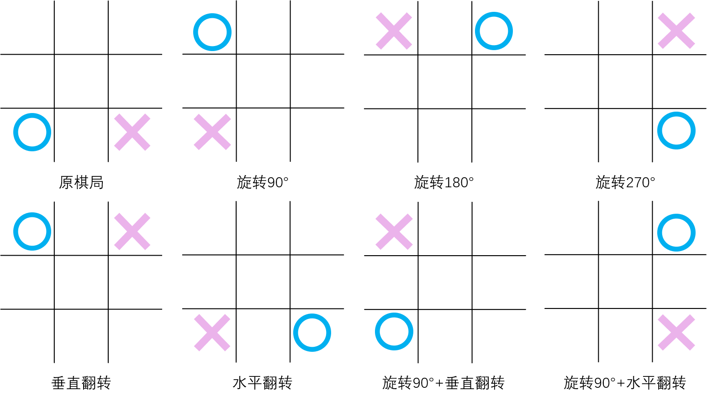
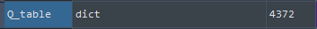
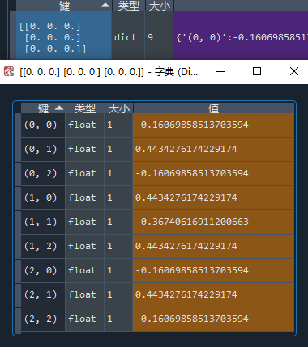
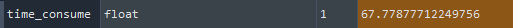
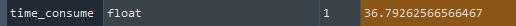
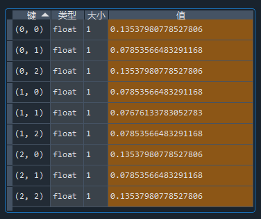
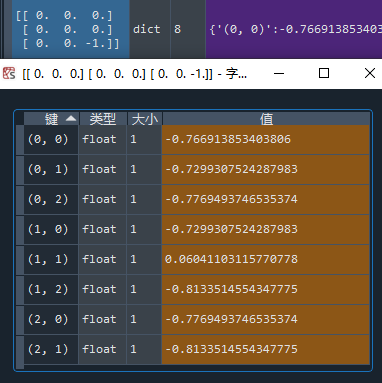

在 强化学习实战 | 表格型Q-Learning玩井字棋（二）开始训练！中，我们让agent“简陋地”训练了起来，经过了耗费时间的10万局游戏过后，却效果平平，尤其是初始状态的数值表现和预期相差不小。我想主要原因就是没有采用等价局面同步更新的方法，导致数据利用率较低。等价局面有7个，分别是：旋转90°，旋转180°，旋转270°，水平翻转，垂直翻转，旋转90°+水平翻转，旋转90°+垂直翻转，如下图所示。另外，在生成等价局面的同时，也要生成等价的动作，这样才能实现完整的Q值更新。

步骤1：写旋转和翻转函数
def rotate(array): # Input: np.array [[1,2,3],[4,5,6],[7,8,9]] list_ = list(array) list_[:] = map(list,zip(*list_[::-1])) return np.array(list_) # Output: np.array [[7,4,1],[8,5,2],[9,6,3]] def flip(array_, direction): # Input: np.array [[1,2,3],[4,5,6],[7,8,9]] array = array_.copy() n = int(np.floor(len(array)/2)) if direction == 'vertical': # Output: np.array [[7,8,9],[4,5,6],[1,2,3]] for i in range(n): temp = array[i].copy() array[i] = array[-i-1].copy() array[-i-1] = temp elif direction == 'horizon': # Output: np.array [[3,2,1],[6,5,4],[9,8,7]] for i in range(n): temp = array[:,i].copy() array[:,i] = array[:,-i-1] array[:,-i-1] = temp return array
步骤2：写生成等价局面及等价动作的函数
函数名为 genEqualStateAndAction(state, action)，定义在 Agent() 类中。
def genEqualStateAndAction(self, state_, action_): # Input: np.array, tuple(x,y) state, action = state_.copy(), action_ equalStates, equalActions = [], [] # 原局面 equalStates.append(state) equalActions.append(action) # 水平翻转 state_tf = state.copy() action_state_tf = np.zeros(state.shape) action_state_tf[action] = 1 state_tf = flip(state_tf, 'horizon') action_state_tf = flip(action_state_tf, 'horizon') index = np.where(action_state_tf == 1) action_tf = (int(index[0]), int(index[1])) equalStates.append(state_tf) equalActions.append(action_tf) # 垂直翻转 state_tf = state.copy() action_state_tf = np.zeros(state.shape) action_state_tf[action] = 1 state_tf = flip(state_tf, 'vertical') action_state_tf = flip(action_state_tf, 'vertical') index = np.where(action_state_tf == 1) action_tf = (int(index[0]), int(index[1])) equalStates.append(state_tf) equalActions.append(action_tf) # 旋转90° state_tf = state.copy() action_state_tf = np.zeros(state.shape) action_state_tf[action] = 1 for i in range(1): state_tf = rotate(state_tf) action_state_tf = rotate(action_state_tf) index = np.where(action_state_tf == 1) action_tf = (int(index[0]), int(index[1])) equalStates.append(state_tf) equalActions.append(action_tf) # 旋转180° state_tf = state.copy() action_state_tf = np.zeros(state.shape) action_state_tf[action] = 1 for i in range(2): state_tf = rotate(state_tf) action_state_tf = rotate(action_state_tf) index = np.where(action_state_tf == 1) action_tf = (int(index[0]), int(index[1])) equalStates.append(state_tf) equalActions.append(action_tf) # 旋转270° state_tf = state.copy() action_state_tf = np.zeros(state.shape) action_state_tf[action] = 1 for i in range(3): state_tf = rotate(state_tf) action_state_tf = rotate(action_state_tf) index = np.where(action_state_tf == 1) action_tf = (int(index[0]), int(index[1])) equalStates.append(state_tf) equalActions.append(action_tf) # 旋转90° + 水平翻转 state_tf = state.copy() action_state_tf = np.zeros(state.shape) action_state_tf[action] = 1 for i in range(1): state_tf = rotate(state_tf) action_state_tf = rotate(action_state_tf) state_tf = flip(state_tf, 'horizon') action_state_tf = flip(action_state_tf, 'horizon') index = np.where(action_state_tf == 1) action_tf = (int(index[0]), int(index[1])) equalStates.append(state_tf) equalActions.append(action_tf) # 旋转90° + 垂直翻转 state_tf = state.copy() action_state_tf = np.zeros(state.shape) action_state_tf[action] = 1 for i in range(1): state_tf = rotate(state_tf) action_state_tf = rotate(action_state_tf) state_tf = flip(state_tf, 'vertical') action_state_tf = flip(action_state_tf, 'vertical') index = np.where(action_state_tf == 1) action_tf = (int(index[0]), int(index[1])) equalStates.append(state_tf) equalActions.append(action_tf) return equalStates, equalActions
细心的读者可能会发问了：你这生成等价局面不去重的么？是的，不去重了。原因之一是如果要去重，那么要比对大量的np.array，实现起来较麻烦，可能会增加很多代码时间；原因之二是对重复的局面多次更新，只是不符合逻辑，但应该没有副作用：毕竟只要数据够多，最后Q表中的值都会收敛到一个值，而重复出现次数多的局面只是收敛得更快罢了。
步骤3：修改Agent()中的相关代码
需要修改方法 addNewState(self, env_, currentMove) 和方法 updateQtable(self, env_, currentMove, done_)，整体代码如下：

import gym import random import time import numpy as np import pickle # 保存/读取字典 # 查看所有已注册的环境 # from gym import envs # print(envs.registry.all()) # 读取字典 try: with open('Q_table_dict.pkl', 'rb') as f: Q_table_pkl = pickle.load(f) except: Q_table_pkl = {} def str2tuple(string): # Input: '(1,1)' string2list = list(string) return ( int(string2list[1]), int(string2list[4]) ) # Output: (1,1) def rotate(array): # Input: np.array [[1,2,3],[4,5,6],[7,8,9]] list_ = list(array) list_[:] = map(list,zip(*list_[::-1])) return np.array(list_) # Output: np.array [[7,4,1],[8,5,2],[9,6,3]] def flip(array_, direction): # Input: np.array [[1,2,3],[4,5,6],[7,8,9]] array = array_.copy() n = int(np.floor(len(array)/2)) if direction == 'vertical': # Output: np.array [[7,8,9],[4,5,6],[1,2,3]] for i in range(n): temp = array[i].copy() array[i] = array[-i-1].copy() array[-i-1] = temp elif direction == 'horizon': # Output: np.array [[3,2,1],[6,5,4],[9,8,7]] for i in range(n): temp = array[:,i].copy() array[:,i] = array[:,-i-1] array[:,-i-1] = temp return array class Game(): def __init__(self, env): self.INTERVAL = 0 # 行动间隔 self.RENDER = False # 是否显示游戏过程 self.first = 'blue' if random.random() > 0.5 else 'red' # 随机先后手 self.currentMove = self.first self.env = env self.agent = Agent() def switchMove(self): # 切换行动玩家 move = self.currentMove if move == 'blue': self.currentMove = 'red' elif move == 'red': self.currentMove = 'blue' def newGame(self): # 新建游戏 self.first = 'blue' if random.random() > 0.5 else 'red' self.currentMove = self.first self.env.reset() self.agent.reset() def run(self): # 玩一局游戏 self.env.reset() # 在第一次step前要先重置环境，不然会报错 while True: # print(f'--currentMove: {self.currentMove}--') self.agent.updateQtable(self.env, self.currentMove, False) if self.currentMove == 'blue': self.agent.lastState_blue = self.env.state.copy() elif self.currentMove == 'red': self.agent.lastState_red = self.agent.overTurn(self.env.state) # 红方视角需将状态翻转 action = self.agent.epsilon_greedy(self.env, self.currentMove) if self.currentMove == 'blue': self.agent.lastAction_blue = action['pos'] elif self.currentMove == 'red': self.agent.lastAction_red = action['pos'] state, reward, done, info = self.env.step(action) if done: self.agent.lastReward_blue = reward self.agent.lastReward_red = -1 * reward self.agent.updateQtable(self.env, self.currentMove, True) else: if self.currentMove == 'blue': self.agent.lastReward_blue = reward elif self.currentMove == 'red': self.agent.lastReward_red = -1 * reward if self.RENDER: self.env.render() self.switchMove() time.sleep(self.INTERVAL) if done: self.newGame() if self.RENDER: self.env.render() time.sleep(self.INTERVAL) break class Agent(): def __init__(self): self.Q_table = Q_table_pkl self.EPSILON = 0.05 self.ALPHA = 0.5 self.GAMMA = 1 # 折扣因子 self.lastState_blue = None self.lastAction_blue = None self.lastReward_blue = None self.lastState_red = None self.lastAction_red = None self.lastReward_red = None def reset(self): self.lastState_blue = None self.lastAction_blue = None self.lastReward_blue = None self.lastState_red = None self.lastAction_red = None self.lastReward_red = None def getEmptyPos(self, state): # 返回空位的坐标 action_space = [] for i, row in enumerate(state): for j, one in enumerate(row): if one == 0: action_space.append((i,j)) return action_space def randomAction(self, env_, mark): # 随机选择空格动作 actions = self.getEmptyPos(env_) action_pos = random.choice(actions) action = {'mark':mark, 'pos':action_pos} return action def overTurn(self, state): # 翻转状态 state_ = state.copy() for i, row in enumerate(state_): for j, one in enumerate(row): if one != 0: state_[i][j] *= -1 return state_ def genEqualStateAndAction(self, state_, action_): # Input: np.array, tuple(x,y) state, action = state_.copy(), action_ equalStates, equalActions = [], [] # 原局面 equalStates.append(state) equalActions.append(action) # 水平翻转 state_tf = state.copy() action_state_tf = np.zeros(state.shape) action_state_tf[action] = 1 state_tf = flip(state_tf, 'horizon') action_state_tf = flip(action_state_tf, 'horizon') index = np.where(action_state_tf == 1) action_tf = (int(index[0]), int(index[1])) equalStates.append(state_tf) equalActions.append(action_tf) # 垂直翻转 state_tf = state.copy() action_state_tf = np.zeros(state.shape) action_state_tf[action] = 1 state_tf = flip(state_tf, 'vertical') action_state_tf = flip(action_state_tf, 'vertical') index = np.where(action_state_tf == 1) action_tf = (int(index[0]), int(index[1])) equalStates.append(state_tf) equalActions.append(action_tf) # 旋转90° state_tf = state.copy() action_state_tf = np.zeros(state.shape) action_state_tf[action] = 1 for i in range(1): state_tf = rotate(state_tf) action_state_tf = rotate(action_state_tf) index = np.where(action_state_tf == 1) action_tf = (int(index[0]), int(index[1])) equalStates.append(state_tf) equalActions.append(action_tf) # 旋转180° state_tf = state.copy() action_state_tf = np.zeros(state.shape) action_state_tf[action] = 1 for i in range(2): state_tf = rotate(state_tf) action_state_tf = rotate(action_state_tf) index = np.where(action_state_tf == 1) action_tf = (int(index[0]), int(index[1])) equalStates.append(state_tf) equalActions.append(action_tf) # 旋转270° state_tf = state.copy() action_state_tf = np.zeros(state.shape) action_state_tf[action] = 1 for i in range(3): state_tf = rotate(state_tf) action_state_tf = rotate(action_state_tf) index = np.where(action_state_tf == 1) action_tf = (int(index[0]), int(index[1])) equalStates.append(state_tf) equalActions.append(action_tf) # 旋转90° + 水平翻转 state_tf = state.copy() action_state_tf = np.zeros(state.shape) action_state_tf[action] = 1 for i in range(1): state_tf = rotate(state_tf) action_state_tf = rotate(action_state_tf) state_tf = flip(state_tf, 'horizon') action_state_tf = flip(action_state_tf, 'horizon') index = np.where(action_state_tf == 1) action_tf = (int(index[0]), int(index[1])) equalStates.append(state_tf) equalActions.append(action_tf) # 旋转90° + 垂直翻转 state_tf = state.copy() action_state_tf = np.zeros(state.shape) action_state_tf[action] = 1 for i in range(1): state_tf = rotate(state_tf) action_state_tf = rotate(action_state_tf) state_tf = flip(state_tf, 'vertical') action_state_tf = flip(action_state_tf, 'vertical') index = np.where(action_state_tf == 1) action_tf = (int(index[0]), int(index[1])) equalStates.append(state_tf) equalActions.append(action_tf) return equalStates, equalActions def addNewState(self, env_, currentMove): # 若当前状态不在Q表中，则新增状态 state = env_.state if currentMove == 'blue' else self.overTurn(env_.state) # 如果是红方行动则翻转状态 eqStates, eqActions = self.genEqualStateAndAction(state, (0,0)) for one in eqStates: if str(one) not in self.Q_table: self.Q_table[str(one)] = {} actions = self.getEmptyPos(one) for action in actions: self.Q_table[str(one)][str(action)] = 0 def epsilon_greedy(self, env_, currentMove): # ε-贪心策略 state = env_.state if currentMove == 'blue' else self.overTurn(env_.state) # 如果是红方行动则翻转状态 Q_Sa = self.Q_table[str(state)] maxAction, maxValue, otherAction = [], -100, [] for one in Q_Sa: if Q_Sa[one] > maxValue: maxValue = Q_Sa[one] for one in Q_Sa: if Q_Sa[one] == maxValue: maxAction.append(str2tuple(one)) else: otherAction.append(str2tuple(one)) try: action_pos = random.choice(maxAction) if random.random() > self.EPSILON else random.choice(otherAction) except: # 处理从空的otherAction中取值的情况 action_pos = random.choice(maxAction) action = {'mark':currentMove, 'pos':action_pos} return action def updateQtable(self, env_, currentMove, done_): judge = (currentMove == 'blue' and self.lastState_blue is None) or \ (currentMove == 'red' and self.lastState_red is None) if judge: # 边界情况1：若agent无上一状态，说明是游戏中首次动作，那么只需要新增状态就好，无需更新Q值 self.addNewState(env_, currentMove) return if done_: # 边界情况2：若当前状态S_是终止状态，则无需把S_添加至Q表格中，直接令maxQ_S_a = 0，并同时更新双方Q值 for one in ['blue', 'red']: S = self.lastState_blue if one == 'blue' else self.lastState_red a = self.lastAction_blue if one == 'blue' else self.lastAction_red eqStates, eqActions = self.genEqualStateAndAction(S, a) R = self.lastReward_blue if one == 'blue' else self.lastReward_red # print('lastState S:\n', S) # print('lastAction a: ', a) # print('lastReward R: ', R) # print('\n') maxQ_S_a = 0 for S, a in zip(eqStates, eqActions): self.Q_table[str(S)][str(a)] = (1 - self.ALPHA) * self.Q_table[str(S)][str(a)] \ + self.ALPHA * (R + self.GAMMA * maxQ_S_a) return # 其他情况下：Q表无当前状态则新增状态，否则直接更新Q值 self.addNewState(env_, currentMove) S_ = env_.state if currentMove == 'blue' else self.overTurn(env_.state) S = self.lastState_blue if currentMove == 'blue' else self.lastState_red a = self.lastAction_blue if currentMove == 'blue' else self.lastAction_red eqStates, eqActions = self.genEqualStateAndAction(S, a) R = self.lastReward_blue if currentMove == 'blue' else self.lastReward_red # print('lastState S:\n', S) # print('State S_:\n', S_) # print('lastAction a: ', a) # print('lastReward R: ', R) # print('\n') Q_S_a = self.Q_table[str(S_)] maxQ_S_a = -100 for one in Q_S_a: if Q_S_a[one] > maxQ_S_a: maxQ_S_a = Q_S_a[one] for S, a in zip(eqStates, eqActions): self.Q_table[str(S)][str(a)] = (1 - self.ALPHA) * self.Q_table[str(S)][str(a)] \ + self.ALPHA * (R + self.GAMMA * maxQ_S_a) env = gym.make('TicTacToeEnv-v0') game = Game(env) time_start = time.time() for i in range(10000): print('episode', i) game.run() time_consume = time.time() - time_start Q_table = game.agent.Q_table # 保存字典 with open('Q_table_dict.pkl', 'wb') as f: pickle.dump(Q_table, f)
测试
经过了上述优化，agent能够在一轮对局中更新16个Q值，比起上一节 强化学习实战 | 表格型Q-Learning玩井字棋（二）开始训练！ 中的更新2个Q值要多8倍，不妨就玩1万局游戏，看看是否能玩出之前玩8万局游戏的效果。
项目1：查看Q表格的状态数

一般般，仍然有状态没有覆盖到。
项目2：查看初始状态
先手开局：

这效果也太好了吧！不但呈现出了完美的对称，还有泾渭分明的胜负判断： 第一步走四边就稳了，走四角和走中间都是输面大（PS：上网一搜，井字棋最优策略居然是占角！这学了个寂寞！是因为训练量少了吗？我多次尝试了从0开始训练1万局游戏，得到的先手开局的策略差异很大，有时agent甚至会学到认为开局占中必胜的策略。不过此一时彼一时，错误的东西也有被记录的价值，乱象也是现象）。
后日谈：发生上述现象的原因是，学习率设置得太大了（0.5），导致Q值反复横跳，根本无法收敛。这种情况下，训练多少次都是没用的...
项目3：测试代码时间
引入了更复杂的trick，确实是完美地争取到了一些收益，但玩一局游戏的时间一定是增加了，增加了多少呢？我们用上一节的老算法和本节的算法分别跑2000局游戏，记录一下时间（本人使用的CPU是：Intel(R) Core(TM) i7-9750H）。
双向更新+等价局面同步更新：

双向更新：

增加了不到两倍的时间，换来了大约8倍的更新量提高，还降低了方差，看来这优化是赚的。
随时保存Q表格，以便调整超参数
使用pickle库保存和读取字典
import pickle # 读取字典 try: with open('Q_table_dict.pkl', 'rb') as f: Q_table_pkl = pickle.load(f) except: Q_table_pkl = {} ..... env = gym.make('TicTacToeEnv-v0') game = Game(env) time_start = time.time() for i in range(1): print('episode', i) game.run() Q_table = game.agent.Q_table # 保存字典 with open('Q_table_dict.pkl', 'wb') as f: pickle.dump(Q_table, f)
训练完毕
学习率设置为0.01，分两个阶段训练：前20万次，设置试探几率 ε = 0.2 以尽量访问到所有合法状态；后20万次，设置 ε = 0.05 以减小波动。完毕后查看一下先手状态下的Q值：

这下对了，确实是开局占角最优！那么后手开局，被对手占角应该怎么走呢？

占中，有机会平。
小结
有了训练完全Q表，我们可以用pygame做一个拥有人机对战，机机对战，作弊功能的井字棋游戏。还可以做一些对战的数据分析，比如AI内战的胜率多高？AI对阵随机策略的胜率多高？下节见！
后文：强化学习实战 | 表格型Q-Learning玩井字棋（四）游戏时间